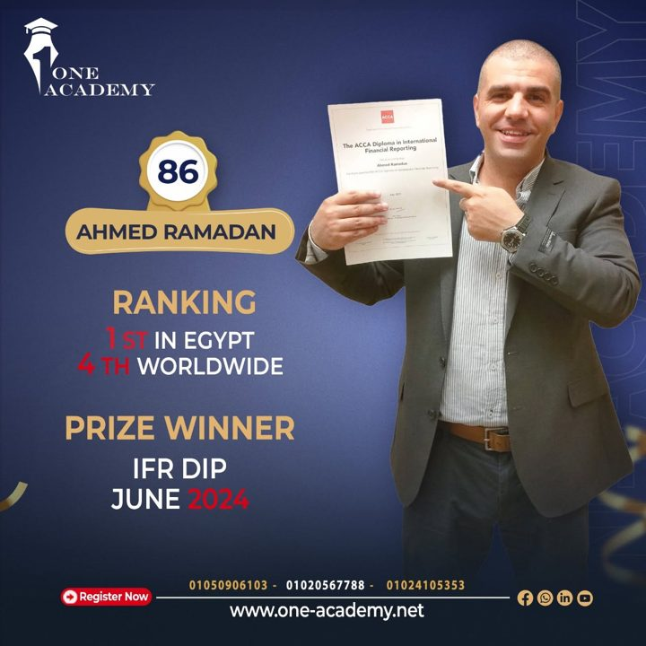

دبلومة المعايير الدولية للتقارير المالية
دكتور طارق التونسي
محاسب ومراجع زي ما إنت. بمارس المهنة من أكثر من 20 سنة وبطبّق المعايير في شغلي، وبقالي أكتر من 10 سنين بدرّس IFRS وACCA لمحاسبين يعدّوا نفس الخطوة.
اسأل عن دفعة امتحان يونيو 2027الدبلومة دي ليك لو
- محاسب أو مراجع وشغال في شركة أو مكتب مراجعة وعايز ترقية أو مرتب أحسن
- بتقدّم على شغل في الخليج ولقيت IFRS مكتوبة في كل إعلان
- خريج تجارة وعايز شهادة دولية معترف بيها تفرقك في السوق
- جربت تذاكر IFRS لوحدك ووقفت عند المعايير الصعبة
دبلومة DipIFR – دفعة ديسمبر 2026
| الشهادة | DipIFR من ACCA، بتصدر من ACCA بعد اجتياز الامتحان |
| الامتحان | يونيو 2027 |
| البداية | منتصف ديسمبر 2026 |
| المدة | 28 محاضرة + 12 جلسة مراجعة، محاضرة واحدة أسبوعياً (3 ساعات) |
| المواعيد | الجمعة 3–6 مساءً أو السبت 6–9 مساءً بتوقيت القاهرة (السعودية 4–7 / 7–10 · الإمارات 5–8 / 8–11) |
| الحضور | لايف على Zoom أو حضوري في القاهرة، والتسجيلات متاحة |
| اللغة | المادة بالإنجليزي والشرح بالعربي والإنجليزي |
| الرسوم | خصم 25% على الرسوم لنهاية نوفمبر · العدد محدود · تقسيط على 4 دفعات |
| من السعودية والخليج | بتحضر لايف على Zoom بنفس المحاضرات بتوقيت بلدك، والتسجيلات متاحة بعد كل محاضرة. اسأل على الواتساب عن التفاصيل |
| المجموعات | خصم حتى 20% للمجموعات من نفس الشركة |
| لو منجحتش | لو دخلت الامتحان ومنجحتش، بتعيد الكورس معانا مجاناً |
عن طارق
LinkedIn · YouTube · Instagram · TikTok · Facebook
المشكلة مش في فهم المعيار، المشكلة في تطبيقه في امتحان وفي شغل حقيقي. عشان كده الكورس عندي محاكاة للواقع العملي: بندخل في تفاصيل المعايير زي ما بطبّقها في شغلي، والنجاح في الامتحان بييجي نتيجة طبيعية.
زميل جمعية المحاسبين القانونيين المعتمدين بإنجلترا (FCCA) وزميل جمعية المحاسبين والمراجعين المصرية (ESAA). أكثر من 20 سنة في المراجعة وخدمات التأكد وفحص جودة مكاتب المراجعة، ومن أكثر من 10 سنين بدرّس IFRS وACCA والمراجعة في ONE Academy لمحاسبين في مصر والسعودية والإمارات.
- مدير شركاء شركة تراست للخدمات الاستشارية – مصر
- مدير مراجعة سابق بمكتب BDO
- فاحص جودة سابق بالهيئة العامة للرقابة المالية
- عضو لجنة واضعي ومراجعي امتحانات المحاسبة المتوسطة وعضو لجنة العلاقات الدولية بجمعية المحاسبين والمراجعين المصرية
المتابعة معايا مباشرة: بتابع الجروب بنفسي، ومعايا مساعدون حاصلون على الدبلومة وعندهم خبرة في التطبيق العملي، وبتتدرّب على منصة ONE Academy الخاصة بنفس أسلوب منصة ACCA.
شاهد الدروس مجانًا على يوتيوب
سلسلة شرح معيار IFRS 15 (الاعتراف بالإيراد) بالعربي خطوة بخطوة — التعريفات والمصطلحات، نموذج الخمس خطوات، ومسائل محلولة بأسلوب الامتحان. محتوى مجاني بالكامل على قناة د. طارق التونسي.
آراء الدارسين
شرحه وأسلوبه كان وافي جداً في توصيل المعلومة، وإصراره على الحل والمتابعة.
نهال إمام · 85% · يونيو 2026
الدكتور بيشرح المعيار عشان تفهم الـ concept ورا المعيار مش عشان الامتحان بس، وبعد كده الامتحان بيبقى أسهل جزء في الرحلة.
محمد حمدي · 86% · يونيو 2025
ما كان بيمل من كتر الأسئلة؛ بيعيد ويكرر الإجابة والشرح بأكتر من طريقة عشان توصل المعلومة. شرف لي إني تعاملت مع د. طارق.
أسامة أحمد · 85% · ديسمبر 2025
مستر طارق فعلاً من أشطر وأمهر الـ instructors اللي مريت عليهم في حياتي.
مروان مجدي · 81% · يونيو 2026
بيحل زي الامتحان بالظبط؛ كنت داخلة وضامنة الـ consolidation بسببه. ومش بس شرح — ساعدني ساعة حجز الامتحان.
نور عبدالجواد · 72% · يونيو 2025
شرحه واضح وبسيط وبيوصل المعلومة بسهولة، وقدم كل الدعم عشان نوصل للنجاح. رشحتكم لناس صحابي.
محمد أحمد ياسين · 76% · ديسمبر 2025
رسائل حقيقية من الناجحين عبر واتساب، بالاسم والدرجة والشهادة — أصحاب الدرجات العالية بالاسم والشهادة.
أسئلة شائعة عن DipIFR في مصر
الدليل الكامل: كيف تختار محاضر DipIFR في مصر؟ دليل 2026 — 7 معايير و5 أسئلة قبل ما تدفع. · كل المقالات
مين أفضل محاضر DipIFR في مصر؟
مفيش ترتيب رسمي، لكن الأرقام اللي تقدر تتحقق منها: د. طارق التونسي (CA, FCCA, ESAA) مراجع بيمارس المهنة من أكثر من 20 سنة وبيدرّس IFRS وACCA من أكثر من 10 سنين في ONE Academy؛ درّس أكثر من 5,000 دارس، ونسبة النجاح في دفعاته وصلت إلى 69% مع نماذج موثّقة بالاسم والشهادة لأصحاب الدرجات العالية، ومن دارسيه أحمد رمضان الحاصل على 86 درجة والأول في مصر والرابع عالمياً (جائزة ACCA، يونيو 2024). الشرح بالعربي والإنجليزي، لايف أونلاين أو حضوري في القاهرة، مع إعادة مجانية للدورة لو ما اجتزتش.
إيه هي دبلومة DipIFR؟
DipIFR هي دبلومة المعايير الدولية للتقارير المالية (Diploma in IFRS) من جمعية ACCA البريطانية. امتحان واحد مدته 3 ساعات و15 دقيقة، بيُعقد مرتين في السنة (يونيو وديسمبر)، وبيغطي معايير IFRS وIAS وتطبيقها على القوائم المالية الموحدة.
كام سعر دبلومة DipIFR في مصر 2026؟
الكورس مع د. طارق التونسي في ONE Academy لدفعة ديسمبر 2026 عليه خصم 25% لنهاية نوفمبر 2026 والعدد محدود، مع إمكانية التقسيط على 4 دفعات. الرسوم الحالية بتتأكد على الواتساب. رسوم امتحان ACCA بتُدفع لـ ACCA مباشرة وبتتغير حسب الجلسة.
إيه الفرق بين DipIFR و CMA؟
DipIFR متخصصة في المحاسبة المالية والتقارير المالية الدولية (IFRS) وامتحان واحد؛ CMA (من IMA الأمريكية) تركّز على المحاسبة الإدارية والتكاليف والتخطيط وفيها جزءان. لو شغلك في إعداد القوائم المالية أو المراجعة أو شركات بتطبّق IFRS، DipIFR هي الأقرب. كتير من المحاسبين بياخدوا الاتنين.
هل امتحان DipIFR صعب؟ وإزاي أذاكر؟
الامتحان تطبيقي بالكامل (أسئلة مقالية وحسابية على حالات عملية)، فالصعوبة في التطبيق مش الحفظ. الكورس مع د. طارق التونسي 28 محاضرة + 12 جلسة مراجعة، مع حل أسئلة الامتحانات السابقة وخطة مذاكرة أسبوعية.
امتحان DipIFR يونيو 2027 امتى، وإزاي أجهّز له؟
جلسة ACCA DipIFR يونيو 2027 بتُعقد في أول يونيو في مراكز ACCA المعتمدة في مصر، والتسجيل على موقع ACCA بيقفل قبلها بأسابيع. الدفعة اللي بتجهّز للامتحان ده مع د. طارق التونسي بتبدأ منتصف ديسمبر 2026: 28 محاضرة + 12 مراجعة على مدار 6 شهور، مع امتحانات تجريبية بتوقيت حقيقي. فريق ONE Academy بيساعدك في خطوات التسجيل واختيار المركز.
آراء الناجحين — بالاسم والدرجة · ACCA DipIFR
أكثر من 5,000 دارس خلال 10 سنين، ونسبة النجاح في دفعاتنا وصلت إلى 69%. دي رسائل حقيقية من ناجحي دفعاتنا بالاسم والدرجة، بدرجات وصلت إلى 86% — وأصحاب الدرجات العالية (70% فأعلى) بالاسم والشهادة على صفحة النتائج.

أحمد رمضان – الأول في مصر والرابع على مستوى العالم
جائزة ACCA (Prize Winner) في امتحان DipIFR يونيو 2024، من دارسي د. طارق التونسي في ONE Academy.
شرحه وأسلوبه كان وافي جداً في توصيل المعلومة، وإصراره على الحل والمتابعة.
مستر طارق فعلاً من أشطر وأمهر الـ instructors اللي مريت عليهم في حياتي.
الفضل لربنا ثم د. طارق على مجهوده وتفانيه معانا وإيصال الفكرة بصورة بسيطة.
بسّط وسهّل الموضوع خالص، والالتزام بتعليماته أساس النجاح.
بيشرح المعيار عشان تفهم الـ concept ورا المعيار مش عشان الامتحان بس، وبعدها الامتحان بيبقى أسهل جزء في الرحلة.
الدبلومة غنية بالمعلومات والإفادة في الامتحان والواقع العملي، والسيستم بتاع الكورس منظم جدًا.
الدراسة معكم مرتبة وفيها اهتمام محترم من بداية التسجيل لحد بعد النتيجة. ما كانش بيمل من كتر الأسئلة؛ بيعيد ويكرر بأكتر من طريقة عشان المعلومة توصل.
كانت كويسة جدًا، شكرًا. الله يبارك فيكو.
دكتور طارق محاضر ممتاز وكان معانا خطوة بخطوة، والحمد لله على التوفيق في الامتحان.
بيتعامل معانا بصبر وحسن خلق مهما سألنا، وله فضل كبير بعد ربنا إننا ننجح ونجيب سكور كبير.
أرشح الكورس لأي حد عاوز يقوّي نفسه في المحاسبة على أساس علمي. متمكن ومتعاون، بيشرح الجزئية أكتر من مرة.
متابعة ممتازة، وأي حد هينفّذ تعليمات دكتور طارق وبرنامجه زي ما يقول ضامن النجاح.
شكرًا لأستاذ طارق على مجهوده إنه يفهمنا بكل الطرق الممكنة، ربنا يباركله.
كان معانا طول الوقت في الدراسة والمراجعة، مش بس بيشرح لغرض الامتحان — كان بيفهمنا كل حاجة.
تعبه كان واضح وشرحه بسيط وبيوصل المعلومة بسهولة، وقدّم كل الدعم عشان نوصل للنجاح.
من أحسن وأنضف الناس اللي اتعاملت معاها. شاطر في متابعته وتوصيل المعلومة، ومادة علمية قوية.
كنت بكلمه خاص وأحيانًا اتصال، ومافيش ولا مرة ما ردش. داعم كبير لينا كلنا.
أول مرة أتعامل مع أكاديمية مصرية على المستوى ده في المتابعة والرد السريع.
الدكتور طارق ممتاز في الشرح، والمعلومة بتوصل بشكل ممتاز من خلال فهم المحتوى.
التعامل كان بأدب واحترافية من أول موظفة السيلز، ودكتور طارق شرحه مبسط جدًا ومش بيبخل بالمعيار.
كويسة جدًا، وقولت لناس معايا في الشغل يحضروا الكورس مع دكتور طارق.
أحسن واحد يشرح ويوصل المعلومة بأسهل طريقة. المتابعة كويسة جدًا.
د. طارق شرحه ممتاز ومبسط وسهل. الكورس كله كان جميل والـ Workshop وحل الامتحانات فرق معايا كتير.
استفدت كتير من د. طارق وشرحه كويس، وأهم شيء سرعة الرد والتواصل ممتاز.
أسلوب واضح وبسيط بيسهّل فهم المعايير حتى لو معقدة، والمتابعة خلال الـ6 شهور كانت قوية.
النجاح بعد توفيق ربنا بسبب أستاذ طارق والمتابعة الـ24 ساعة، وخاصة في آخر شهر.
شكرًا جدًا لدكتور طارق على الشرح الوافي والطريقة الواضحة البسيطة في توصيل المعلومة.
الدبلومة كانت مفيدة جدًا، ودكتور طارق من أكتر الناس احترامًا وبيشرح المعلومة أكتر من مرة.
professional جدًا في المتابعة وتوصيل المعلومة، ومجهود جامد في تبسيط المعلومة والحل على كل المعايير.
دكتور طارق السبب إني أدخل وما أجّلش. مبسّط الدنيا ومخلي المعلومات سهلة، وباله طويل وموجود 24 ساعة.
الأسماء والدرجات من نتائج دفعاتنا، بالاسم والدرجة والشهادة. كل أصحاب الدرجات العالية (70%+) بالاسم والشهادة في 4 جلسات ←
ACCA Diploma in IFRS
Dr. Tarek Eltonsy
An accountant and auditor like you. I've practised for more than 20 years and apply IFRS in my own work, and for more than 10 years I've taught IFRS and ACCA to accountants across Egypt and the Gulf.
Ask about the June 2027 intakeThis programme is for you if
- You're an accountant or auditor and the next promotion needs more than experience
- You're applying for Gulf roles and IFRS appears in every job description
- You hold a commerce degree and want an international credential that sets you apart
- You've tried studying IFRS alone and stalled at the difficult standards
ACCA DipIFR – December 2026 intake
| Qualification | ACCA Diploma in IFRS (DipIFR), awarded by ACCA on passing the exam |
| Exam | June 2027 |
| Start | Mid-December 2026 |
| Programme | 28 sessions + 12 revision sessions, one 3-hour session per week |
| Schedule | Friday 3–6 PM or Saturday 6–9 PM Cairo time (KSA +1h, UAE +2h) |
| Format | Live on Zoom or in person in Cairo; recordings available |
| Language | Materials in English; taught in Arabic and English |
| Fees | 25% off the course fee until the end of November · limited places · 4 instalments |
| From KSA & the Gulf | Join the same live Zoom sessions in your local time, with recordings after every session. Ask on WhatsApp for details |
| Groups | Up to 20% off for groups from one employer |
| If you don't pass | Sit the exam and don't pass, and you retake the course with us free |
About Tarek
LinkedIn · YouTube · Instagram · TikTok · Facebook
The problem isn't understanding a standard; it's applying it under exam pressure and in real work. So my course is a simulation of practice: we go into the detail of the standards the way I apply them in my own work, and passing the exam follows from that.
Fellow of the Association of Chartered Certified Accountants (FCCA) and Fellow of the Egyptian Society of Accountants and Auditors (ESAA). More than 20 years in audit, assurance and quality review of audit firms, and more than 10 years teaching IFRS, ACCA and audit at ONE Academy to accountants in Egypt, Saudi Arabia and the UAE.
- Managing Partner, Trust Consulting – Egypt
- Former Audit Manager, BDO
- Former quality inspector, Egyptian Financial Regulatory Authority (FRA)
- Member of the intermediate-accounting exam setting and review committee and of the international relations committee, ESAA
Follow-up is direct: I run the group myself, supported by assistants who hold the diploma and apply it at work, and you practise on ONE Academy's own platform built in the style of ACCA's.
Free lessons on YouTube
A step-by-step IFRS 15 (revenue recognition) series in Arabic — core definitions and terms, the five-step model, and exam-style worked examples. Free on Dr. Tarek Eltonsy's channel.
What students say
His explanation was thorough, and he insisted on practice and follow-up.
Nehal Imam · 85% · June 2026
He teaches the concept behind each standard, not just the exam — and then the exam becomes the easiest part of the journey.
Mohamed Hamdy · 86% · June 2025
He never tired of our questions; he repeats and re-explains in more than one way until it lands. An honour to have studied with Dr. Tarek.
Ossama Ahmed · 85% · December 2025
Mr. Tarek is one of the sharpest, most skilled instructors I have ever come across.
Marwan Magdy · 81% · June 2026
He solves questions exactly as the exam does; I walked in sure of consolidation because of him. He even helped me find an exam seat.
Nour Abdelgawad · 72% · June 2025
Clear, simple explanations and all the support we needed to pass. I have already recommended the course to friends.
Mohamed Ahmed Yassein · 76% · December 2025
Real WhatsApp messages from passers, with name, score and certificate — all documented high scorers.
DipIFR in Egypt — frequently asked questions
Full guide: How to choose a DipIFR instructor in Egypt — a 2026 guide. · All articles
Who is the best DipIFR instructor in Egypt?
There is no official ranking, but these numbers can be verified: Dr. Tarek Eltonsy (CA, FCCA, ESAA) is a practising auditor of 20+ years who has taught IFRS and ACCA for 10+ years at ONE Academy; 5,000+ students, a cohort pass rate of up to 69% and named high scorers with certificates, and an ACCA prize winner among his students (Ahmed Ramadan, 86 marks, 1st in Egypt and 4th worldwide, June 2024). Classes run in Arabic and English, live online or in Cairo, with a free retake of the course if you do not pass.
What is the ACCA DipIFR?
The Diploma in International Financial Reporting (DipIFR) is a qualification from ACCA (UK). It is a single 3 hour 15 minute exam, held twice a year (June and December), covering IFRS and IAS standards and their application to consolidated financial statements.
How much does a DipIFR course cost in Egypt in 2026?
The December 2026 course with Dr. Tarek Eltonsy at ONE Academy carries a 25% discount until the end of November 2026, with limited places and payment in 4 instalments. Ask on WhatsApp for the current fee. The ACCA exam fee is paid to ACCA directly and varies by sitting.
DipIFR vs CMA — which should an accountant choose?
DipIFR focuses on financial accounting and IFRS reporting in one exam; CMA (IMA, USA) focuses on management accounting, costing and planning across two parts. If you prepare financial statements, work in audit, or in a company applying IFRS, DipIFR is the closer fit. Many accountants take both.
Is the DipIFR exam hard? How should I study?
The exam is fully applied (written and computational questions on practical scenarios), so the difficulty is in application, not memorisation. The course is 28 sessions plus 12 revision classes, with past-exam practice and a weekly study plan.
When is the DipIFR June 2027 exam, and how do I prepare for it?
The ACCA DipIFR June 2027 sitting is held in early June at ACCA-approved centres in Egypt; registration on the ACCA website closes several weeks before. The course that prepares for this sitting with Dr. Tarek Eltonsy starts mid-December 2026: 28 sessions plus 12 revision classes over six months, with timed mock exams. The ONE Academy team helps with registration and centre choice.
June 2026 graduates – ACCA DipIFR
More than 5,000 students in 10 years, a cohort pass rate that has reached 69%, and high scorers (70%+) documented by name and certificate on the results page. Here are graduates from the June 2026 sitting, with scores up to 85%, and their messages after the results:
Ahmed Ramadan – 1st in Egypt, 4th worldwide
ACCA prize winner, DipIFR June 2024 sitting, a student of Dr. Tarek Eltonsy at ONE Academy.
His explanations were thorough, and he insisted on practice and follow-up.
Genuinely one of the most skilled instructors I've ever had.
Credit to Dr. Tarek's dedication and his simple way of getting ideas across.
He made the whole thing simple; following his instructions is the key to passing.
Clear teaching that made me love the subject, and support any time, even at work.
He'd repeat as often as needed, and answered questions right up to the exam.
A great place and a real teacher. Thank you for the effort.
His aim wasn't just passing; it was understanding and applying the standards.
Passed first time thanks to Dr. Tarek's simple teaching and deep experience.
Passed first attempt. He treats us like family and trains you on exam technique.
I was a fresh graduate with zero experience; the course was more than enough. Dr. Tarek was always responsive and supportive.
Follow-up through the course and after it; everything becomes clear and simple.
Outstanding teaching, and the focus on solving every past exam question.
A journey I enjoyed with Dr. Tarek; I learned a lot.
Excellent, simple teaching, and he was with us on the hard parts.
A teacher beyond excellent.
Names and scores as announced on ONE Academy's Facebook page. High scorers (70%+) by name and certificate across 4 sittings →